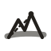

手绘线稿 + 站点现有色板（墨 #23201c / 山蓝 #2a4d9b / 旗红 #e0533c / 荧光黄 #e0b23c）· 同一套图形要能落到 16px favicon
把首页那张手绘山景压成图标：抖线圈 + 山脊 + 虚线路径 + 山顶红旗。信息最全，16px 下会偏糊。
图标本身就是产品：一张纸、一条起伏的高程线、红点标峰。和「配速表」语义最贴，缩到 16px 仍是清晰的折线。
笔画最粗、对比最强，16px 下最清楚；代价是细节最少，和现有山景插画的关系偏弱。

选定后我再出 favicon.svg / favicon-32.png / apple-touch-icon 180 / 512 与站点页头替换，最后部署到 CF Pages。